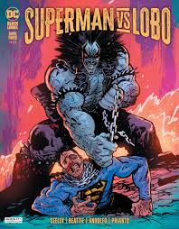

omics
Wolf History
The Last Czarnian and "The Main Man," Lobo is the most badass bounty hunter in the galaxy. He’s the best bounty hunter in the known universe and the last sentient being you’d ever want to get into a bar fight with if you hope to make it out in one piece. He’s the intergalactic alien badass known as Lobo, often called by his nickname “The Main Man,” and if you’re lucky, you’ll never cross his path. You might be asking yourself why an alien being would be named after an Earth animal, even one as fierce as a wolf. That’s because the word “Lobo” in this instance translates into “he who devours your entrails and thoroughly enjoys it” in the ancient Khund dialect. Turns out, his parents could not have given him a more fitting name. Riding around the spaceways on his “space cycle,” which he named Spacehog, Lobo exhibits all the traits someone would associate with a biker in a Hell’s Angels-style motorcycle gang on Earth, from his long hair and tattoos, down to his kill or be killed attitude. There’s nothing in the galaxy that Lobo loves more than his pet dolphins, a good fight, the ladies and getting drunk in some intergalactic dive bar. Probably all in that order. Over the years, Lobo has fought on the side of both the good guys and the bad, pretty much just drifting towards whoever pays him the most to get the job done, or which side promises him the better, bloodier fight. He’s tussled with Superman and the Justice League, and just about every superhero in the DC Universe. For more on Lobo's history, visit his page on DCUniverse.com.
The imortal

His strength is extremely high, capable of rivaling powerful beings like Superman. For example, he has already rendered Superman unconscious without much apparent effort. Lobo has an extremely keen sense of tracking, which allows him to find any object or person he has come into contact with, even if they are on the other side of the universe. His only weakness is poisonous gases. Lobo also travels in a vacuum, without the need for oxygen, using a space motorcycle. His superhuman resistance is truly strange: he can be injured by bullets, knives, and whatever else comes his way, but he does not die. In Guy Gardner Reborn, Lobo demonstrates great resistance to fire, when several thunderers next to him were incinerated by a statue of Sinestro, but the Main Man suffered nothing other than singed hair. However, he cannot die under any circumstances. In the comic book “Lobo’s Back” (in Brazil, “Lobo Está Morto”), he is murdered and his soul is sent to Heaven. After several confusions and a lot of astral violence, neither Heaven nor Hell accept him, and his soul is returned to his body. After that, his soul always returns to his body, even if only a drop of blood remains, for example (his regenerative capacity takes care of forming a new body from the remaining piece). For most of his life, Lobo literally terrified his adversaries with his mere presence. His opponents avoided confrontation, under penalty of each drop of his blood becoming another Lobo. This ability was taken away by Vril Dox after a saga of L.E.G.I.O.N., where Lobo used his replication power to the maximum, becoming sterile. Some time later, it was discovered that one of Lobo’s clones had survived, and had become more intelligent than Lobo himself. In the confrontation, one of the Wolves won, but to this day it is not known whether it was the original or the clone. If the clone won, then Main Man could still have the power of replication. However, Main Man was later seen removing a mini-radio from his own brain; this concludes that the original Wolf won, since only organic matter can be reproduced.
Better History
Wolf vs Super-Man
An unlikely partnership forms, like a boy scout becoming part of a motorcycle gang. Together, they face Numen, an insane god and the most popular being in the universe, and the mad scientist Dr. Flik, determined to study the last children of Krypton and Czarnia.
Superman is stronger than Lobo because of his superior powers, like super strength, speed, and invulnerability. While Lobo is tough and regenerative, Superman has the advantage in a direct fight.
